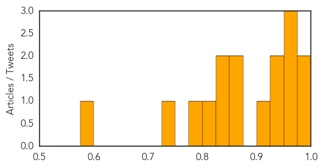
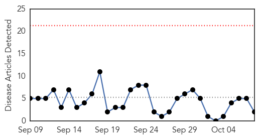

Dengue Fever
30-Day Web Trend
19 alerts, 9 warnings

30-Day Twitter Trend
0 alerts, 0 warnings

Article Locations

Article Confidences
Top Articles:
- 0.997
- Zika Disease: Another Reason to Hate Mosquitoes
- 0.994
- Rapid changes in weather lead to dengue of ailments in Mumbai
- 0.971
- CHO advises: “Get that 4 o’clock habit!”
- 0.960
- India faces worst dengue fever outbreak in years with more than 6,500 confirmed cases - India
- 0.958
- Dengue crisis: Delhi govt notices to 14 doctors
- 0.927
- Dengue cases drop by 40% in Davao City
- 0.925
- PAHO/WHO helps Bahamas cope with health impact of Hurricane Joaquin - Bahamas
- 0.901
- Dengue cases add up in Varanasi as patients keep coming back
- 0.870
- Dengue death toll in Bulacan rises to 12
- 0.850
- Soaring numbers: In Rawalpindi, 48 more dengue cases reported
- 0.837
- Study links dengue fever outbreaks with El Niño
- 0.828
- Ludhiana: Health dept finds dengue larvae in 100 tyres
- 0.811
- Study: Link between dengue epidemics and high temperatures during strong El Niño season
- 0.779
- Catholic Church joins war on dengue, rebuke of loan shark scandal
- 0.735
- The curse that is dengue
- 0.584
- Dengue cases in Davao down
Top Tweets:
-
No tweets found for Oct 08, 2015
Meningitis
30-Day Web Trend
0 alerts, 0 warnings

30-Day Twitter Trend
1 alerts, 0 warnings

Article Locations

Article Confidences

Top Articles:
Top Tweets:
-
No tweets found for Oct 08, 2015